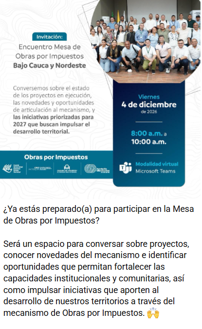

Será un espacio para conversar sobre proyectos, conocer novedades del mecanismo e identificar oportunidades que permitan fortalecer las capacidades institucionales y comunitarias, así como impulsar iniciativas que aporten al desarrollo de nuestros territorios a través del mecanismo de Obras por Impuestos.
Cómo van las obras que ya se están ejecutando en la región.
Qué cambió en el mecanismo y cómo vincularse a él.
Los proyectos priorizados que buscan impulsar el desarrollo territorial.
Convoca: Cámara de Comercio de Medellín para Antioquia y aliados regionales de la Mesa de Obras por Impuestos.

Es una forma de pagar el impuesto de renta en obras. En vez de girarle toda la plata a la DIAN, una empresa puede usar hasta el 50 % de su impuesto para construir o dotar un proyecto en un municipio golpeado por el conflicto armado o la pobreza (ZOMAC y PDET). No es una donación ni un regalo de la empresa: es impuesto que se paga con obra.
La empresa pone en una fiducia la plata del impuesto que va a pagar con la obra. Es la opción que más se usa: en este Gobierno saliente reunió 357 proyectos por cerca de $3 billones.
La empresa firma un convenio con la entidad del sector, ejecuta la obra con su plata y al final recibe un Título de Renovación del Territorio (TRT) para pagar impuestos. Sumó 122 proyectos por unos $977.000 millones.
Balance de la Agencia de Renovación del Territorio (agosto de 2026) y de la Gobernación de Antioquia (noviembre de 2026).
"bill." = billones de pesos. Un billón son un millón de millones.
El terremoto del 10 de agosto, el cambio de Gobierno el 7 de agosto y un proyecto de ley en el Congreso cambiaron el panorama de Obras por Impuestos. Esto es lo que hay que saber.
Tras el sismo del 10 de agosto, el Gobierno declaró la Emergencia Económica (Decreto 1261 de 2026) y con el Decreto Legislativo 1389 del 9 de septiembre creó una modalidad especial para reconstruir. Funciona en cualquier municipio afectado, sea o no ZOMAC o PDET, en 16 departamentos.
Tiene su propio banco de proyectos en la ART, sin los cortes del mecanismo de siempre, y la viabilidad se define en 15 días hábiles. El tope sigue siendo el 50 % del impuesto. Pueden entrar contribuyentes con ingresos desde 33.610 UVT (unos $1.760 millones de 2026).
Para la reconstrucción hay hasta $200.000 millones de cupo en 2026 y hasta $10 billones en 2027, unas 50 veces más. La recuperación de vivienda se calcula en $19,7 billones, así que esa plata cubriría más o menos la mitad.
Diez líneas de inversión: vivienda VIS y VIP, educación, salud, agua potable y saneamiento, energía, vías y transporte, telecomunicaciones, bienes públicos rurales, deporte y gestión del riesgo.
Busca darle una ley propia y permanente al mecanismo de Obras por Impuestos. Se aprobó en primer debate en la Comisión Tercera (noviembre de 2025) y el 1 de octubre de 2026 los ponentes radicaron un texto concertado para el segundo debate, trabajado con la Plataforma Obras por Impuestos (Gobernación de Antioquia, ART, academia y más de 70 empresas). Sigue en trámite en la Plenaria de la Cámara; después le falta el Senado.
Según la ART, la iniciativa del representante Felipe Carballo busca unir las opciones fiducia y convenio y garantizar que el cupo crezca un mínimo cada año.
La modalidad de Reconstrucción dura lo que dure la Emergencia Económica, hasta 2027. Para volverla permanente se necesita una ley del Congreso. Además, los decretos de emergencia pasan por revisión automática de la Corte Constitucional.
En el Senado también se radicó en 2026 un proyecto para llevar Obras por Impuestos a los municipios declarados zonas de desastre o calamidad pública.
Bogotá reglamentó en 2026 su propio mecanismo con impuestos distritales (Decreto 043 de 2026, por fiducia). Medellín y Antioquia propusieron que parte del predial y de Industria y Comercio también pueda ir a obras de reconstrucción, y un decreto de la emergencia permite cofinanciar proyectos nacionales con obras por impuestos territoriales.
El 7 de agosto de 2026 llegó un nuevo Gobierno. El cupo del mecanismo de siempre lo aprueba el CONFIS para cada año y debe respetar el Marco Fiscal. El cupo ordinario de 2027 todavía tiene que salir; por eso es clave llegar con los proyectos listos.
Lo que ya está decidido, lo que está andando y lo que falta por definir, en orden.
La subregión PDET Bajo Cauca y Nordeste Antioqueño tiene 13 municipios. Todos pueden recibir proyectos de Obras por Impuestos.
Acueductos para los corregimientos de Cargueros y Bijagual, con pozo, planta de tratamiento, tanques y redes nuevas. Aporte de Hidroituango cercano a $4.845 millones, aprobado para 2026.
345 equipos biomédicos para hospitales públicos de 21 municipios PDET de Antioquia, entre ellos Bajo Cauca y Nordeste.
250 metros de puente en Puerto Bélgica, Cáceres, hecho con Obras por Impuestos, para más de 31.000 usuarios.
Maquinaria y equipos de movilidad y rescate para la Fuerza Pública en 55 municipios ZOMAC de Antioquia, dentro del paquete 2026.
La Mesa del 4 de diciembre presentará las iniciativas priorizadas para 2027. Si su comunidad tiene una necesidad, ese es el momento de hacerla oír.
Cópielas o mándelas por WhatsApp para no llegar con las manos vacías.